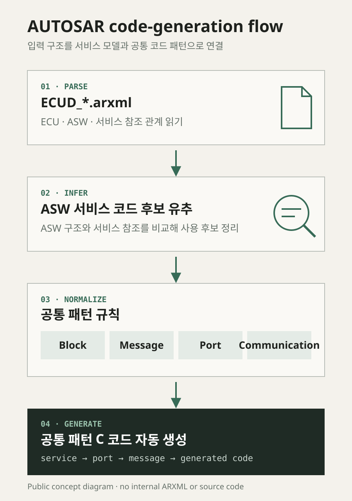

ECUD_*.arxml을 파싱해 ASW가 사용하는 서비스 코드 후보를 유추하고, 블록·메시지·포트·통신 유형별 공통 패턴을 적용해 반복 코드를 자동 생성하는 개발 도구입니다.
MOBASE ASEC · AUTOSAR / ARXML
AUTOSAR 서비스 패턴 코드 생성 툴
Overview
Problem
ASW마다 필요한 서비스와 통신 구조가 달라도 코드 형태에는 반복되는 패턴이 있습니다. ARXML 관계를 수작업으로 따라가며 같은 구조를 다시 작성하면 누락과 형식 차이가 생기기 쉬웠습니다.
Approach
ARXML 구조를 공통 서비스 모델로 정리한 뒤 패턴 규칙과 코드 생성 단계로 연결했습니다.
ECUD_*.arxml을 파싱해 ECU·ASW·서비스 참조 관계를 읽습니다.- ASW 구조와 서비스 참조를 비교해 해당 ASW가 사용하는 서비스 코드 후보를 유추합니다.
- 서비스 정보를 블록·메시지·포트·통신 유형 단위로 정규화하고 공통 패턴과 연결합니다.
- 선택된 패턴으로 반복 C 코드를 자동 생성하고 이후 검증 흐름으로 전달합니다.
Screen evidence
실제 사내 ARXML과 생성 코드는 공개하지 않고, 사용자 확인을 받은 동작 구조만 개념도로 단순화했습니다.
